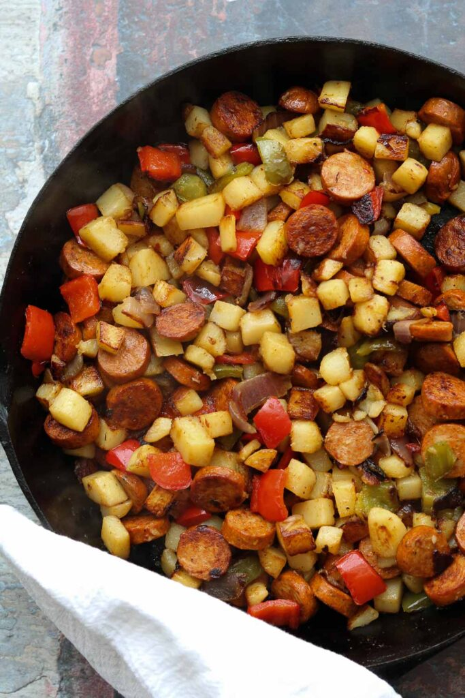

Cajun Sausage and Potato Hash

Description
This easy (and fast-cooking!) breakfast meal, which can also be easily substituted for a dinner meal, can be
made with most ingredients home cooks typically already have on hand. For this recipe, we will be using cajun
sausage, Yukon Gold potatoes, red onion, red and/or orange bell pepper, and lots of garlic! As far as the onions and
bell peppers go, you can use whichever you like, but to avoid the beige meal, I decided to add these colorful
variations of the chosen vegetables.
Ingredients
- 3-4 small Yukon Gold potatoes, cubed
- 1/2 red bell pepper, chopped
- 1/2 orange bell pepper, chopped
- 1/2 red onion, chopped
- 4-5 cloves of garlic, or more depending on taste
- salt and pepper
- 1 package of Cajun sausage, diced
- Cajun seasoning, adjusted to taste
- Olive Oil
Steps
- Over medium high heat, start with a hot skillet. Add 1 tbsp of oil if using chicken sausage, but omit
if you are using pork sausage
- Add sliced sausage to the skillet
- If the sausage is precooked, just give them a nice char and heat through. About 5 minutes. Remove from pan.
- Add 1 tbsp of oil and allow to heat. Then, add potatoes, peppers, onions, Cajun seasoning, salt and pepper.
- Saute mixture well and stir every couple of minutes, allowing to char, but not burn. About 20 minutes.
- Taste and add more salt or Cajun seasoning as needed.
- Add sausage back to the pan and heat everything together through completely.
- Serve hot.
A note for Cajun seasoning: mostly consists of: salt, pepper, paprika, onion powder, garlic powder, red (Cayenne) pepper.
Home